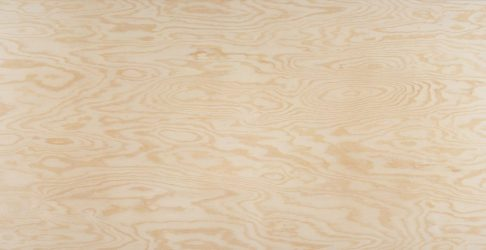
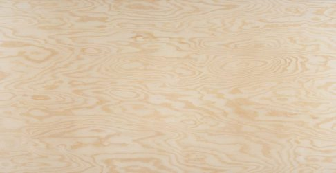

Binderholz
De Binderholz plaat is ontwikkeld voor hoogwaardige toepassingen in interieurprojecten en meubelvervaardiging. De milieuvriendelijke 3-laagse verlijming biedt alle goede eigenschappen van massief hout met extra stevigheid en duurzaamheid. Conform PEFC-label. Wordt vernist of gebeitst.


Multiplex
Multiplexplaten zijn samengesteld uit meerdere op elkaar gelijmde lagen, met vezelrichtingen loodrecht op elkaar. Dit levert stabiliteit en grotere afmetingen. We gebruiken Europese houtsoorten: Berk, Grenen en Populier. Multiplex wordt vernist of beplakt met laminaat.
 

MDF
MEDITE MDF is geschikt voor algemene toepassingen. Gemaakt van verpulverd hout samengeperst onder hoge druk en temperatuur. Platen voor 70-80% FSC-gelabeld. Ook formaldehydevrije variant mogelijk. MDF wordt vernist of geverfd.
OSB
Constructieplaat, goedkoop en ook geschikt voor meubels. Smartply OSB is FSC-gelabeld (gemengde bronnen) en formaldehydevrij verlijmd.
Rubberwood
Het hout van de rubberboom, na latexproductie, wordt gebruikt voor massieve meubelplaten. Wordt vernist, gebeitst of gegeolied.

Fineer
Fijn hout, 0,5-2 mm dik, verlijmd op drager zoals MDF. Voornamelijk Europese houtsoorten FSC/PEFC. Gefineerde platen worden vernist. Op bestelling beschikbaar.
Laminaat
Meerdere lagen papier vermengd met kunsthars, samengeperst onder hoge druk en temperatuur. Gemiddeld 0,8 mm dik. Wordt verlijmd op multiplex of MDF. Verkrijgbaar in veel kleuren; wit laminaat goedkoper dan gekleurd.